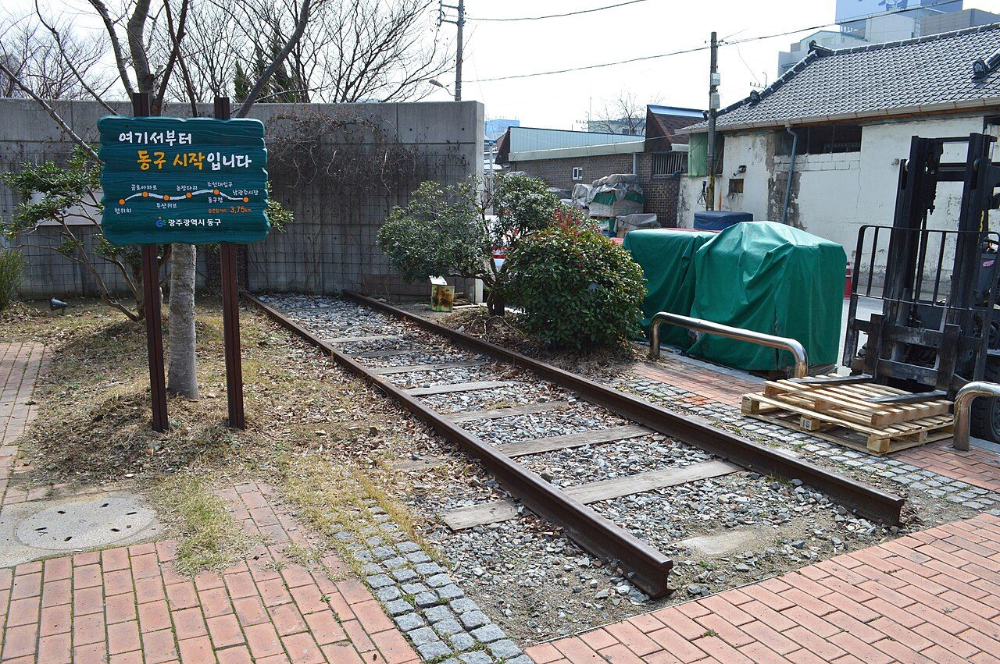
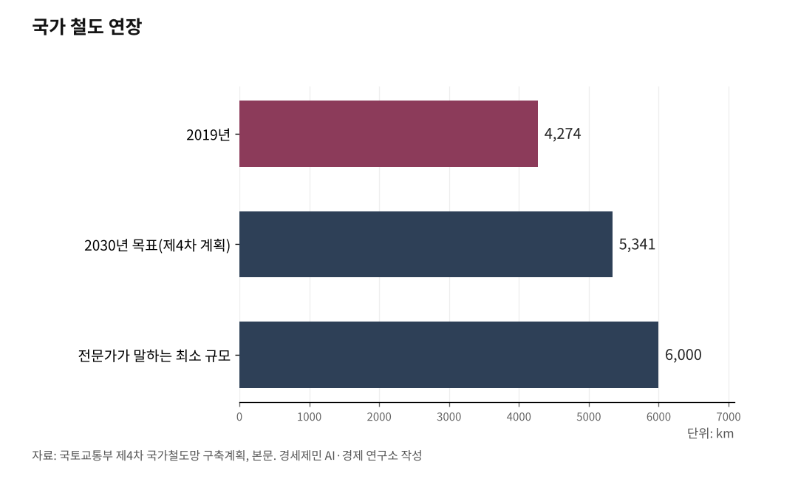

[127년 한국철도③] 서울 가는 길은 넉넉하다… 이젠 지방끼리 잇는 망
경부·호남 KTX로 서울 방사형은 사실상 완성됐다
서울로 모이는 방사형, 정작 지방끼리는 끊겼다
격자는 도로의 논리… 5극3특엔 독일식 다중심 망이다
수도권 GTX는 수도권 몫, 국가는 강호축·서해안·항만직결 먼저
서울로 가는 길은 이미 넉넉하다. 정작 빠진 것은 지방과 지방을 직접 잇는 길이다. 7월 발표를 앞둔 제5차 국가철도망 구축계획이 채울 곳은 서울이 아니다. 수도권 1극이 아니라 5극3특 다극을 잇는 망이다. 3편은 그 방향을 다룬다.

1. 서울 가는 길은 넉넉하다
서울행 고속철도는 사실상 완성됐다. 경부고속선은 서울과 부산을, 호남고속선은 서울과 광주를 잇는다. 여기에 수서발 SRT가 더해졌고, 강릉선과 중앙선이 서울에서 동해안과 영남 내륙으로 뻗었다.
실적도 이를 뒷받침한다. 한국교통연구원 분석을 보면 수도권과 부산·울산권을 잇는 철도 수단분담률은 고속철도 1단계 개통으로 15.9%포인트, 2단계 개통으로 11.5%포인트 올랐고, 같은 기간 항공 분담률은 24.2% 급감했다. 서울과 지방을 잇는 간선을 KTX가 이미 장악한 것이다.
서울 방사형은 거의 완성됐다. 서울로 가는 고속선을 더 까는 일은 국가철도망의 최우선 과제가 아니다.

2. 방사형은 서울로만 통한다
방사형 철도는 모든 길을 한 점에 모은다. 경부선도 호남선도 강릉선도 서울에서 갈라지므로, 지방에서 지방으로 가려면 서울을 거치거나 멀리 우회해야 한다.
그 끝에서 사람도 일자리도 수도권으로 쏠렸다. 통계청 2024년 인구주택총조사를 보면 수도권 인구는 2019년 처음 전국의 절반을 넘은 뒤 2024년 50.8%인 2631만 명에 이르렀다. 빠져나가는 핵심은 청년이다. 국가데이터처 국내인구이동 통계를 보면 지난해 비수도권에서 20대 4만8300명이 순유출돼 그대로 수도권으로 옮겼고, 20대 순이동이 모든 연령대 가운데 가장 컸다. 시가총액 100대 기업 가운데 79개사가 수도권에 본사를 둔 터라, 일자리를 좇는 청년은 고속철도를 타고 서울로 더 쉽게 옮겨 갔다.
이를 두고 빨대 효과라 부른다. 다만 그 양상은 분야마다 갈린다. 대구와 광주를 분석한 연구를 보면 사설학원 같은 교육에서는 빨대 효과가 나타났으나 쇼핑과 의료에서는 뚜렷하지 않았고, 공간계량 분석에서는 KTX 개통 5년 뒤 영남권에서 인구 유출효과가 확인됐다. 효과의 크기는 논쟁적이지만, 방사형이 서울을 모든 이동의 중심에 둔다는 구조만은 분명하다.
서울 1극 방사형의 한계가 여기 있다. 방사형은 지방을 서울에 잇는 데는 성공했으나, 지방과 지방을 잇는 일은 비워 두었다.
3. 정작 지방끼리는 끊겼다
서울 가는 길은 넘치지만, 지방끼리 가는 길은 없다.
부산항과 인천항은 국가 컨테이너 물동량의 88%를 처리한다. 그러나 두 항만의 신항을 직접 잇는 철도가 없어, 수도권 화물은 인천신항을 두고 403km 떨어진 부산신항까지 도로로 내려간다. 전주와 광주는 80km 거리이지만, 직결 철도가 없어 열차가 익산으로 돌아간다. 강릉과 목포를 가로로 잇는 강호축은 핵심 구간인 충북선 고속화가 2031년 준공을 목표로 아직 공사 중이고, 군산 이남 서해안은 철도 공백지대로 남았다.
철도망의 바탕도 인구 규모에 견주면 얇다. 국토교통부 제4차 국가철도망 구축계획을 보면 국가 철도연장은 2019년 4274km이고, 2030년까지 5341km로 늘리는 것이 목표다. 같은 기간 철도 수송분담률도 11.5%에서 17%로 끌어올린다. 그러나 탄소중립과 수송구조 전환을 이루려면 도시철도를 뺀 국가철도망을 최소 6000km까지 키워야 한다는 것이 전문가의 지적이다. 빈 망을 채우려면 골격부터 넓혀야 한다.
4. 격자가 아니라 망이다
정부도 방사형의 한계를 안다. 국토교통부는 2025년 업무계획에서 X자형을 4×4 격자형 고속철도망으로 바꾸겠다고 밝혔다. 종축은 서해전라선·중부내륙선·중앙선·동해선이고, 횡축은 서울속초선·경강선·대구광주선·경전선이다. 국토부는 이로써 전국 2시간 생활권과 전 국민 90% 고속철 서비스를 이루겠다고 했다.
그러나 격자는 본래 도로의 논리다. 국가 간선도로망이 남북과 동서로 축을 교차시킨 격자형으로 짜인 것처럼, 격자는 면을 바둑판으로 고르게 덮는 방식이다. 반면 철도는 면이 아니라 도시라는 결절을 잇는 망이다. 도로의 격자를 철도에 그대로 옮길 일이 아니다.
독일이 본보기다. 독일은 베를린과 뮌헨, 프랑크푸르트, 라인루르가 저마다 경제권으로 서고, 그 결절을 어디서나 어디로나 잇는 다중심 망을 짰다. 독일은 결절역마다 환승이 사방으로 맞물리도록 열차 시각표를 하나로 묶는 정시각 운행도 추진하고 있다. 이는 모든 고속선이 파리로 모이는 프랑스 방사형과 정반대다. 독일은 그렇게 약 3만8800km를 엮어 유럽연합에서 가장 긴 철도망을 이뤘다.
한국이 갈 길도 여기 있다. 이재명 정부는 수도권 1극이 아니라 5개 초광역권과 강원·전북·제주 3개 특별자치도를 키우는 5극3특을 국가균형성장 전략으로 내걸었다. 다극을 키우려면 그 위에 깔 철도도 한 도시로 모이는 방사형이나 도로식 격자가 아니라, 결절을 고르게 잇는 다중심 망이어야 한다.
5. 수도권은 수도권이, 국가는 다극을
문제는 돈이다. 제5차 국가철도망 구축계획에 통상 들어가는 5년 단위 예산은 약 40조원 안팎이지만, 전국 지자체가 건의한 사업은 약 650조원에 이른다. 건의가 예산의 16배에 이른다. 제4차 계획의 신규사업이 44개·58조8000억원이었던 것과 견주면, 이번 건의가 그만큼 부풀었다. 6·3 지방선거도 건의를 키웠다. 경실련 분석을 보면 시·도지사 후보가 낸 철도·도시철도 공약은 25개에 이르고, 그 가운데 85%는 예산조차 적지 않았다.
한정된 예산을 어디에 쓸지가 관건이다. 먼저 수도권은 수도권 스스로 풀어야 한다. 인구와 세수가 몰린 수도권은 GTX와 경인 광역경제권을 자체 재원으로 감당할 여력이 있다. 국가철도망 예산을 수도권에 더 쏟는 것은 국비로 서울 집중을 부추기는 일이다.
국가철도망이 먼저 채울 곳은 지방 다극을 잇는 망이다. 첫째는 강호축이다. 강릉과 목포를 잇는 이 동서축은 6·3 지방선거에서 강원과 충북, 전남·광주 광역단체장 후보가 함께 내건 합동 공약으로, 충북지사가 당선되며 한층 힘을 받았다. 둘째는 서해선 군산~목포다. 끊긴 서해안 종축을 잇는다. 셋째는 부산신항과 인천신항을 직결하는 철도다. 서울을 거치지 않고 두 항만을 묶는다. 넷째는 전주와 광주를 잇는 철도다. 광주시가 1조2400억원 규모로 건의한 80km 단절 구간이다.
네 노선은 한 가지를 공유한다. 서울로 향하는 노선이 아니라, 지방의 결절끼리 직접 잇는 노선이라는 점이다. 철도의 구실도 달라진다. 지방을 서울에 잇는 통로가 아니라, 각 광역경제권이 스스로 굴러가도록 받치는 골격이 된다.
6. 다극 위에 속도를 나눈다
다극을 잇는 망이라고 모두 시속 300km 고속일 필요는 없다. 철도는 같은 노선에 열차와 승객이 몰릴수록 한 명을 더 실어 나르는 비용이 낮아지는 밀도의 경제가 작동하는 산업이다. 그러므로 수요가 두꺼운 축은 빠른 고속으로 채워 밀도를 높이고, 얇은 축은 속도를 낮춰 알맞게 잇는 것이 한정된 예산을 살리는 길이다. 독일식 다중심 망이 결절마다 환승을 모으는 것도 흩어진 수요를 한데 묶어 이 밀도의 경제를 살리는 설계다.
철도의 목적도 바뀌어야 한다. 이제 필요한 철도는 지방을 서울에 더 빨리 잇는 철도가 아니라, 각 광역경제권이 스스로 서도록 권역 안과 권역 사이를 잇는 철도다. 독일의 여러 경제권이 다중심 망 위에서 함께 성장한 것처럼, 한국의 5극3특도 다중심 망이 받쳐야 한다.
다음 편에서는 그 속도의 분화, 노선마다 등급을 매기는 선로등급제를 다룬다.
※ 이 기사는 AI 프로그램 클로드를 활용해 작성했습니다.
참고문헌
· "2025년 업무계획", 국토교통부, 2025.1.13.
· "4X4 고속철도망 구축 속도…상반기 철도SOC 예산 4.1조 집행", 철도경제신문, 2025.1.14., https://www.redaily.co.kr/news/articleView.html?idxno=11182
· "재미있는 교통통계", 한국교통연구원 국가교통DB, 2012., https://www.ktdb.go.kr/www/selectBbsNttView.do?bbsNo=7&key=42&nttNo=478
· "2024년 인구주택총조사 결과(등록센서스 방식)", 통계청, 2025.7.29., https://www.korea.kr/news/policyNewsView.do?newsId=156721680
· "2025년 국내인구이동 통계", 국가데이터처, 2026.1.29., https://www.etoday.co.kr/news/view/2550728
· "기업 본사의 수도권 집중 현상과 시사점", 하나금융연구소(이성엽), 2025.5.9., https://www.hanaif.re.kr/boardDetail.do?hmpeSeqNo=36550
· "고속철도 개통 후 빨대효과 분석: 대구와 광주를 사례로", 전서희·장수은, 대한교통학회 학술대회지, 2017.2.
· "KTX 개통에 따른 국토권역별 인구이동의 실증분석, 2004~2009", 정일홍·이성우, 지역연구 27(3), 2011, 121-138.
· "제4차 국가철도망 구축계획(2021~2030)", 국토교통부, 2021.6.29.
· "Characteristics of the railway network in Europe", Eurostat, 2025., https://ec.europa.eu/eurostat/statistics-explained/index.php?title=Characteristics_of_the_railway_network_in_Europe
· "민주 '강호축 철도망' 발표…중원 표심 공략", 신아일보, 2026.5.20., https://www.shinailbo.co.kr/news/articleView.html?idxno=5022491
· "철도·고속도로 상위계획, 6월 말 베일 벗는다", 대한경제, 2026.4.29., https://v.daum.net/v/20260430062005418
· "6.3지방선거 16개 시·도지사 후보 개발공약 현황", 경제정의실천시민연합, 2026.6.1., https://ccej.or.kr/posts/eVtMW6q
· "행정수도 완성 밑그림…이 대통령 '5극 3특 지역 주권'", 뉴스토마토, 2025.9.16., https://www.newstomato.com/ReadNews.aspx?no=1275063
· "전주 도심 비켜간 전주-광주 철도 노선 논란", 전북일보, 2025.4.16., https://www.jjan.kr/article/20250416580176
· "제5차 국가철도망 군산-목포 서해선은 인천-목포가 핵심", 인천투데이, 2024.11.28., https://www.incheontoday.com/news/articleView.html?idxno=257991
· "2024년, 국내 항만 역대 최대 컨테이너 물동량 3173만TEU 처리", 해양수산부, 2025.1.24., https://www.mof.go.kr/doc/ko/selectDoc.do?docSeq=60146
사진 출처
· [대표사진] Saigen Jiro, "Old Gyeongjeon Line in Gwangju.JPG", 위키미디어 공용, CC0, https://commons.wikimedia.org/wiki/File:Old_Gyeongjeon_Line_in_Gwangju.JPG
※ 이 기사는 인공지능을 활용해 작성했습니다.
관련기사
- [127년 한국철도②] 탄소배출 자동차 대비 13% 철도로 모달시프트할 때
- [127년 한국철도⑤] KTX 속도 따라 요금 현실화… 무궁화 늘려 선택권 보장
- [127년 한국철도④] 모두가 고속일 필요는 없다… 속도도 값도 등급으로 갈라야 산다
- [127년 한국철도-번외] 외국인 606만명 이용, 국제공항을 고속철도로 잇자
저작권자 © AI경세제민 무단전재 및 재배포, AI학습 및 활용 금지